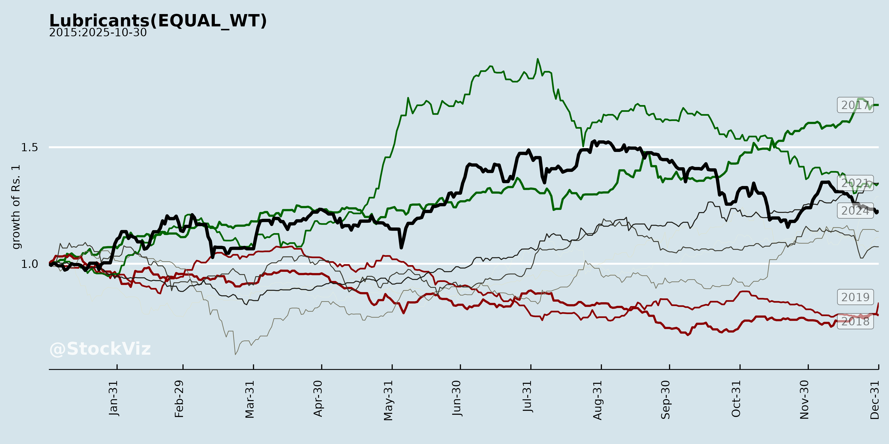
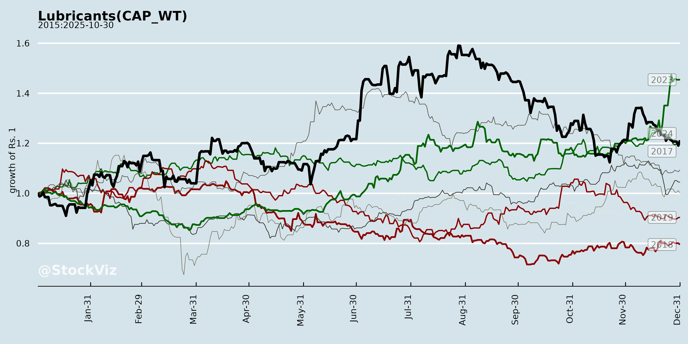
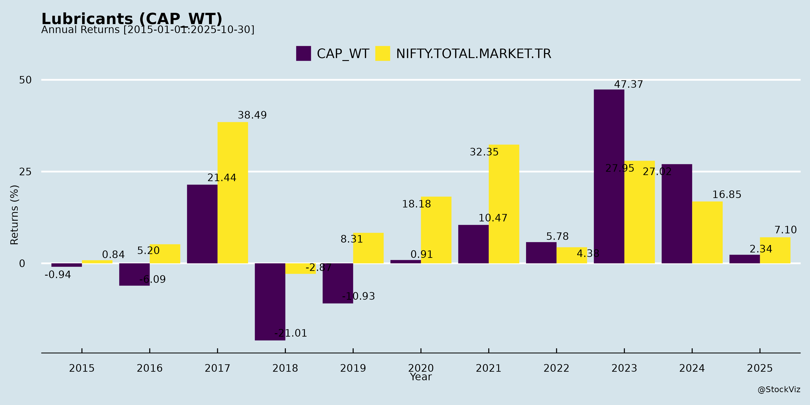
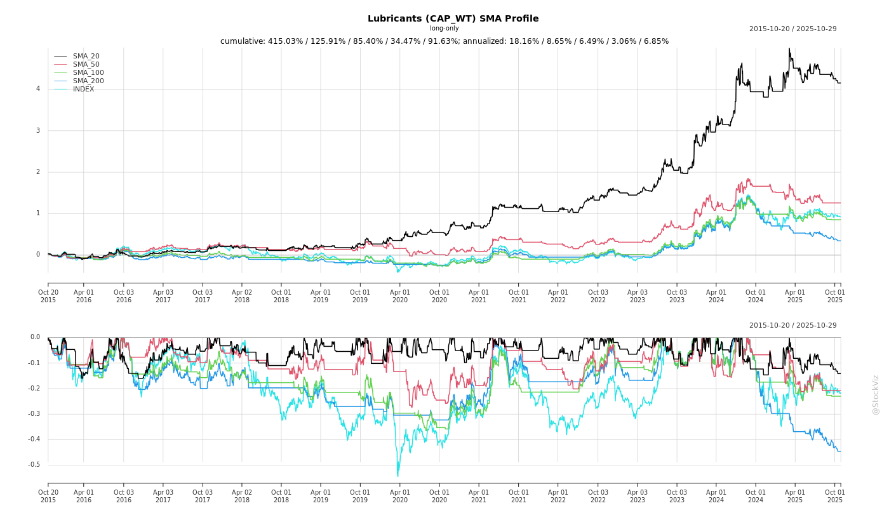
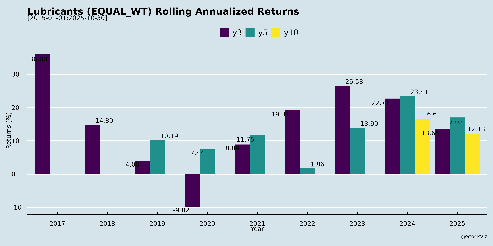
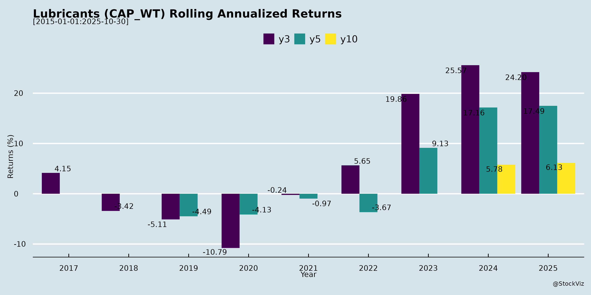

asof: 2025-11-30
Indian Lubricants Sector Analysis (Based on Castrol India, Gandhar Oil, and Peer Announcements)
The Indian lubricants sector demonstrates resilience amid volatility, with key players like Castrol India (Q3 FY25: 7% volume growth, 6% revenue growth to ₹1,363 Cr, 10% PAT growth to ₹228 Cr) and Gandhar Oil Refinery (H1 FY26: 9% volume growth to 261k KL, Q2 EBITDA up 43% QoQ to ₹66 Cr) reporting steady performance. Focus areas include volume-led growth, rural/industrial penetration, specialty oils (e.g., PHPO at 49% of Gandhar’s H1 revenue), and EV adaptations. Peers like Gulf Oil and Savita Oil signal ongoing investor engagement via meets. Below is a structured summary of headwinds, tailwinds, growth prospects, and key risks.
Tailwinds (Supportive Factors)
Headwinds (Challenges)
Growth Prospects
| Metric | Castrol (9M FY25) | Gandhar (H1 FY26) |
|---|---|---|
| Volume Growth | +8% | +9% |
| Revenue Growth | +7% | +2% (H1) / +17% QoQ |
| EBITDA Margin | ~24% | Improving (Q2: 6.2%) |
| Key Driver | Automotive/Rural | PHPO (49%) |
Key Risks
Overall Outlook: Positive with volume-led, profitable growth (ahead of industry), balanced by proactive mitigation (hedging, diversification). Sector poised for 8-10% growth in FY26, driven by domestic tailwinds, but vigilant on inputs/EV. Investors should monitor Castrol’s strategic review and Q4 base oil trends for near-term catalysts.
asof: 2025-12-01
Indian Lubricants Sector Analysis (Based on Q3/Q4 FY25 Results of Key Players)
The Indian lubricants sector, as reflected in recent results from Castrol India (CASTROLIND), Veedol Corporation (VEEDOL), Savita Oil Technologies (SOTL), Gandhar Oil Refinery (GANDHAR), and GP Petroleums (GULFPETRO), shows resilient volumes amid revenue/margin pressures. Castrol reported record FY24 revenue (+6% YoY) with strong Q4 growth, while others faced YoY declines (e.g., Veedol -10% 9M revenue, Gandhar -7% 9M revenue, GP -14% 9M revenue). Overall, manufacturing volumes held steady (e.g., Gandhar +13% QoQ standalone), driven by automotive/industrial demand, but trading volatility and cost headwinds weighed on profitability. PAT growth was mixed: Castrol +7% FY, but others down 20-50% YoY.
Below is a structured summary of headwinds, tailwinds, growth prospects, and key risks.
Headwinds (Challenges Impacting Performance)
Tailwinds (Positive Factors Supporting Resilience)
Growth Prospects (Medium-Term Opportunities)
Projected FY25 Growth: Revenues +3-7% (Castrol leading); EBITDA margins 8-12% (from current 9-10%).
Key Risks
| Risk Category | Description | Impact on Peers |
|---|---|---|
| Commodity Price Volatility | Crude/base oil fluctuations; forex exposure (imports). | All (Gandhar/Savita forex losses); 20-30% COGS tied to oil prices. |
| Competition | MNCs (Castrol dominant) vs. regionals; unorganized 40% market. | GP/Veedol trading erosion; price wars in automotive. |
| Regulatory/Environmental | BS-VI norms, EV shift, carbon taxes. | Castrol/Gandhar investing in EV lubes; delayed transition risk. |
| Geo-Political/Macro | Oil supply disruptions, inflation. | Gandhar cites “volatile environment”; 10-15% revenue sensitivity. |
| Operational | Inventory/fire risks (Veedol); capex delays (Gandhar Silvassa). | Working capital strain (Savita ₹74 Cr liabilities). |
| Execution | Rural scaling, premium adoption. | Castrol strong; smaller peers lag (GP promoter pledging nil but dilution risk). |
Overall Outlook: Cautiously Optimistic. Tailwinds from volumes/innovation offset headwinds, with Castrol as sector bellwether (record FY24). Smaller players face margin risks but benefit from diversification. FY25 growth hinges on crude stability (<$80/bbl) and monsoons/auto sales. Investors: Favor leaders like Castrol (high ROE, dividends); monitor Gandhar for capex delivery. Sector ROE ~15-20%; risks mitigated by cash-rich B/S.
Sources: Company filings (Q3/Q4 FY25); figures in ₹ Cr unless specified.
asof: 2025-12-03
Summary Analysis of Indian Lubricants Sector
Based on the provided documents from key players (Castrol India, Gulf Oil Lubricants, Veedol, Savita Oil Technologies, Panama Petrochem, Gandhar Oil Refinery, GP Petroleums), the Indian lubricants sector exhibits resilience amid sustainability pressures and strategic expansions. Companies are focused on compliance, ESG integration, and international growth, with petroleum products dominating ~99% of turnover (e.g., Savita). Financial stability is evident from routine disclosures, while M&A/partnerships signal proactive scaling. Below is a structured analysis of headwinds, tailwinds, growth prospects, and key risks.
Headwinds (Challenges)
Tailwinds (Supportive Factors)
Growth Prospects
Key Risks
| Risk Category | Description | Mitigation (from Docs) | Severity |
|---|---|---|---|
| Environmental/Climate | GHG rise, extreme weather disrupting ops; water scarcity (48KL withdrawal). | Renewables adoption, Scope 3 pilots, ZLD mechanisms. | High |
| Cyber/Data Privacy | Breaches eroding trust; no incidents but flagged as material. | VAPT testing, IT policies. | Medium-High |
| Regulatory/Compliance | Fines for non-EPR/waste (zero complaints FY25); labelling errors. | 100% audits, ISO certifications (9001/14001/45001). | Medium |
| Operational/Supply Chain | Turnover rates (14% employees), human rights (zero issues). | 100% insurance/training, supplier audits (50% sustainable sourcing). | Medium |
| Financial/Market | RPT concentration low (0.1-0.4%), but forex volatility in exports/partnerships. | Arm’s-length deals, min. royalty guarantees. | Low-Medium |
Overall Summary: The sector faces headwinds from ESG regulations and cyber threats but benefits from tailwinds like renewables and global tie-ups, driving growth prospects in exports/sustainable products (mid-teens potential). Key risks center on climate/cyber, mitigated via proactive policies (zero major incidents). Positive disclosures signal stability; monitor Q3 FY26 results for volume pickup. Sector rating: Neutral-Positive with sustainability as a differentiator.
asof: 2025-11-30
Analysis of Indian Lubricants Sector: Headwinds, Tailwinds, Growth Prospects, and Key Risks
Using the provided documents (primarily Castrol India’s Q3 FY25 earnings transcript and Gandhar Oil Refinery’s Q2/H1 FY26 earnings transcript, supplemented by analyst meet announcements from Gulf Oil Lubricants and Savita Oil Technologies), this analysis synthesizes sector dynamics. Castrol (a market leader in automotive lubricants) and Gandhar (focused on white oils/PHPO and specialty lubes) represent key players, highlighting trends in automotive, industrial, rural, and specialty segments. Data from Nov 2025 reflects a resilient sector amid volatility.
Tailwinds (Positive Factors)
Headwinds (Negative Factors)
Growth Prospects
| Segment | Contribution/Growth | Outlook |
|---|---|---|
| Automotive (Personal/CVO) | Castrol: 48-50%/6-8%; Gandhar: High-margin focus | Strong; EV fluids/services hedge shift |
| Industrial/PHPO/Transformer | Castrol: 12-14% double-digits; Gandhar: 49% PHPO +9% | 10-12% volumes; infra/P&C tailwinds |
| Rural/Exports | Castrol: 25-30% B2C double-digits | Deepening penetration; geo expansion |
| Services/Adjuncts | Castrol: CAS/VinFast; Gandhar: New bids | 3-5 Yr transformation to “maintenance” model |
Key Risks
Summary
The Indian lubricants sector exhibits steady resilience with volume-led growth (7-9% YTD) outpacing industry, fueled by domestic tailwinds (rural/infra/PHPO) and cost efficiencies amid volatility. Castrol’s premium auto dominance and Gandhar’s specialty focus highlight margin stability (EBITDA 21-24%) and diversification (EV/services/PHPO). Growth runway strong (10-12% volumes, new adjacencies like data centers/EV), but EV transition and input volatility pose headwinds. Outlook positive yet vigilant: Navigate forex/base oils via hedging/pass-throughs; strategic reviews (e.g., Castrol) add uncertainty but unlock value. Sector poised for profitable expansion if execution sustains, with rural/industrial as key levers. Investors should monitor Q4 prints and EV traction.
asof: 2025-12-02
Indian Lubricants Sector Analysis (Based on Q3/H1 FY25 Results from Key Players: Castrol India, Savita Oil, Panama Petrochem, Gandhar Oil, etc.)
The provided filings (Q3/9M/H1 FY25 results from Castrol India, Savita Oil Technologies, Panama Petrochem, Gandhar Oil Refinery, and others) indicate a resilient sector amid a mature market. Revenue and volumes grew across most players (e.g., Castrol +6% YoY Q3 revenue, +7% volumes; Savita +11% H1 revenue; Panama +7% H1 consolidated revenue), driven by industrial/rural demand and pricing discipline. EBITDA/PAT margins held steady (Castrol EBITDA +13% YoY Q3). However, challenges like forex/base oil volatility persist. Below is a structured summary of headwinds, tailwinds, growth prospects, and key risks.
Tailwinds (Positive Drivers)
Headwinds (Challenges)
Growth Prospects
Key Risks
| Risk Category | Description | Mitigation/Impact |
|---|---|---|
| Commodity/FX | Base oil (60-70% costs) & forex volatility (Castrol/Panama highlight). | Hedging; pricing power (medium impact). |
| Competition | Mature oligopoly (Castrol/Gulf dominant); new entrants/private labels. | Brand/portfolio strength (low-medium). |
| Demand/Macro | Auto slowdown/EV shift; rural weakness if monsoons fail. | Diversification (industrial 40%+ mix; low). |
| Regulatory/Execution | SEBI filings (e.g., Veedol director vote; Gandhar liquidation); IBC compliance. | Routine (low impact). |
| Liquidity/Debt | Working capital strain (inventories +20-30% H1); finance costs (Gandhar). | IPO proceeds deployed (Gandhar); net debt flat. |
| Geopolitical | Oil supply disruptions. | Inventory buffers (medium). |
Overall Summary: Bullish near-term (Buy/Hold) with tailwinds from volumes/pricing outweighing headwinds. Growth at 8-10% revenue FY26 viable if macros hold; risks contained by sector consolidation (top-4 ~70% share). Monitor oil prices & Q3 volumes for confirmation. Castrol/Savita as sector bellwethers.
asof: 2025-11-30
Indian Lubricants Sector Analysis (Based on Provided Press Releases)
Tailwinds
Headwinds
Growth Prospects
Key Risks
Overall Summary: The sector shows resilience with double-digit growth and innovation driving tailwinds, outperforming amid headwinds like costs and weather. Prospects are strong in premium/domestic segments and EV adjacencies, but risks from volatility warrant monitoring. Positive momentum aligns with auto recovery and diversification.
Copyright © 2023 SAS Data Analytics Pvt. Ltd. All rights reserved.